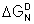

Human aquaporin, PDB 1FQY
The aqueous environment drives protein folding.
 Protein hydration
Protein hydration
 Protein folding
Protein folding
 Protein crystallization
Protein crystallization
 Protein denaturation
Protein denaturation
 Prions
Prions
'The denatured protein molecule we consider to be characterized by the absence of a uniquely defined configuration.'
Linus Pauling and Alfred Mirsky 1936
Protein folding is driven by its interaction with water as it emerges from ribosomal synthesis into the bulk aqueous phase of the cytoplasm. The folding is very fast, partly because the number of possible conformations is far far lower than that described in the Levinthal paradox [2608],b and mainly because of the guided conformations rapidly found by means of the aqueous interactions. The rearrangement of water around wholly unfolded protein chains releases energy to start the folding process [3210]. This particularly involves the hydrophobic interactions, reducing their large surface area with water which otherwise would cause an unfavorable entropy decrease (mostly translational [686a, 1577]). Consider a water molecule next to a surface to which it cannot hydrogen-bond. The incompatibility of this surface with the low-density water that forms over such a surface [29] encourages the surface minimization that drives the proteins' tertiary structure formation (for example, see [1312]). An alternative view of this process is that the protein conformation tends to minimize the disruption of the water matrix [2037]. Such sequential hydrophobic collapse is necessarily accompanied and guided by (secondary) structural hydrogen-bond formation between favorable peptide linkages in parallel with their desolvation [467] and the formation of strong ion-paired salt links [2311].a A driving force for this, in crowded intracellular environments, is the release of water to be available for the hydration of other solutes and maximizing its entropy [686b]. Charge-charge interactions, due to molecular crowding inside cells, may slow protein folding. Proteins are not necessarily stabilized inside cells (compared with in vitro studies) but reducing these charge-charge interactions may increase protein stability [2495]. The folding route is controlled by the desolvation barriers [676] plus charge-charge interactions and aided and directed by water-mediated contacts zipping up neighboring residues [1417]. An additional factor is reducing the aqueous sheath surrounding the growing polypeptide chain by folding into secondary structures, releasing water to hydrate elsewhere [2288]. Similar factors help organize proteins involved in quaternary and equilibrium cluster formation, where each water-mediated interaction has been estimated to contribute an average of 4.4 kJ ˣ mol−1 to protein-protein interface stabilization [688]. Water is thus intimately involved in guiding protein folding as the protein is synthesized and needs to be included in the structural prediction of protein [643]. The importance of subtle hydration forces is shown in the α-helix to β-sheet conformational transition that accompanies the racemic self-assembly of polylysine [727].
Opposite is shown schematic potential energy funnel for the folding of proteins without sufficient water present. It highlights the many barriers to the preferred minimum energy structure on the folding pathway. Numerous local minima might trap the protein in an inactive three-dimensional molecular conformations. The top rim represents the high energy of the unfolded protein with folding, lowering the energy towards a minimum energy structure at the bottom of the funnel. It should be noted that these funnels represent three-dimensional landscapes, whereas the actual energy landscapes are multidimensional.
The unfolded states of most foldable sequences are expanded in water, even if they are quite hydrophobic [3066]. Thus, when a protein is fully hydrated, the potential energy landscape is seen to be considerably smoother.a Under conditions of sufficient hydration, this allows proteins to attain their active minimum-energy conformation in a straightforward and rapid manner. The potential energy barriers are lowered and smoothed due to the ease with which water molecules can lubricate the movement of the amino acid backbone and side groups by the rapid formation and exchange of hydrogen bonds. The amino-acid side-chains also facilitate this process by reducing the hydration of peptide groups (a shielding effect) that promotes protein folding [3090].
Similar effects may be seen in the activity of enzymes with hydration [822], although complete hydration is unnecessary for some activity to be evident. Under physiological conditions inside cells, the water is known to be more ordered (see intracellular water). Such water promotes both the folding rate and stability of the protein [1250] even further.
Although indicated as such in the cartoons, there is no one 'minimum' structure but a collection of substates, with small energetic differences. Jumps between these substates, eased by hydration, allow and determine the flexibility that the protein needs for its biological actions.
Incorporating water-mediated interactions in the folding process has allowed protein structure prediction from the sequence data [2782].
As the amide I stretch vibration (≈ 1680 cm−1) is similar to liquid water's bend vibration (v2, ≈ 1645 cm−1), transfer of energy from water hydrogen-bonded to protein asparagine and glutamine groups is facilitated [913]. This explains the increased structural instability of proteins containing higher numbers of surface asparagine and glutamine residues and, in particular, is of relevance to the α-helix - β-sheet structural instability in prions [913]. Also, the protein backbone motions can thus be energetically coupled with protein-bound water molecules, a process that does not occur in D2O solutions [3705].
Although the native state of a protein resides at a minimum on the potential energy surface, there is no reason to suppose that this structure is the global minimum free energy structure as its folding route is a guided, rather than random, process. It is clear that other structures with lower minima exist, such as those often irreversibly produced on denaturation, for example on heating followed by cooling, which utilizes other intermolecular interactions [1152].
Compatible solutes (osmolytes, for example, betaine, trimethylamine N-oxide, proline, glycerol, and trehalose), that stabilize the surface low-density water and increase the surface tension, will also maintain the protein's structure (see also the Hofmeister effect and the solubility of nonpolar gases). In contrast to protein denaturants (for example, alcohol, urea, and guanidinium chloride), osmolytes stay away from the proteins surface [3460]. Osmolytes vary in their effects depending on their concentration, the presence of other osmolytes and denaturants, the pH, the temperature, the pressure, and the nature of the protein.
Many proteins are glycosylated with increased solubility. The role of the carbohydrate groups has been debated for many years. It now appears that this increased solubility is mainly as the low intermolecular interaction between surface glycans reduces the tendency for aggregation (and crystallization) rather than the glycan groups increasing the interactions with water [1164, 2104]. Somewhat unexpectedly, deglycosylated proteins appear to have a stronger interaction with water (by weight) and more extensive water-binding (by molecule) than their glycoproteins [1164]; perhaps because some carbohydrate hydroxyl groups replace several of the polypeptide surface water interactions.
[Back to Top  ]
]
Proteins may form crystals when precipitated slowly from an aqueous solution (e.g., of ammonium sulfate). Slow precipitation is required to produce small numbers of larger crystals rather than very large numbers of tiny crystals. Crystals of undenatured proteins for structural analysis are best formed with water molecules retained within the crystal lattice. Crystallization of native proteins appears to have a three-step mechanism involving nucleation, in which mesoscopic metastable protein clusters of dense liquid serve as precursors to the ordered crystal nuclei followed by crystal growth [1800]. This process seems to involve an aqueous biphasic separation and fits nicely with the two-state structuring in liquid water, where crystallization occurs within the dense phase.
E. coli growth rate and protein denaturation, from [2200]
Protein denaturation involves a change in the protein structure (generally an unfolding) with activity loss. It has been described using the small protein, hen egg-white lysozyme [2545]. Water is critical, not only for the correct folding of proteins but also for the maintenance of this structure. Heat denaturation and loss of biological activity have been linked to the breakup of the 2-D-spanning water network (see above) around the protein [1215] (due to increased breakage of the hydrogen bonds with temperature), which otherwise acts restrictively on protein vibrational dynamics [976]. As proteins denature, their structures initially become looser, allowing them to take up more water with the water-exposed surface increasing by up to 50% [2803] as might be expected from reversing protein folding. It is a cooperative process (see right) [2200]. The free energy change on folding or unfolding is due to the combined effects of protein folding/unfolding and hydration changes [4036]. These compensate to such a large extent that the free energy of stability of a typical protein is only 40-90 kJ ˣ mol−1 (equivalent to very few hydrogen bonds), whereas the enthalpy change (and temperature times the entropy change) may be greater than ±500 kJ ˣ mol−1 different. There are both enthalpic and entropic contributions to this free energy that change with temperature and give rise to heat denaturation and, in some cases, cold denaturation. Protein unfolding at higher temperatures (heat denaturation) is easily understood. However, the widespread existence of protein unfolding at low temperatures is surprising, particularly as it is unexpectedly accompanied by a decrease in entropy [416]. Heat denaturation is endothermic (on heating), but cold denaturation is exothermic (on cooling) [1548]. Cold denaturation occurs only in aqueous solutions due to water's anomalous density behavior and the small size of H2O molecules [2253]. There is a cold-denaturation of proteins at the ice-water interface due to the lowering of the unfolding free-energy barrier [3906]. Surprisingly, at even lower temperatures (<194 K), proteins may return to the folded state due to the desolvation of their hydrophobic core [4343].
Indicative variation of free energy, enthalpy, and entropy
of the exposure of polar and nonpolar amino acids with temperature

The free energy, on changing from the native (N) state to the denatured (D) state, is given by
The overall free energy change ()
depends on the combined effects of the exposure of the
internal polar and nonpolar groups and their interaction
with water together with the consequential changes in
the water-water interactions on  and
and  . The graph is meant to be indicative only. Denaturation
is only allowed when is negative; its rate is then dependent on circumstances
and may be fast or immeasurably slow. On heat denaturation,
. The graph is meant to be indicative only. Denaturation
is only allowed when is negative; its rate is then dependent on circumstances
and may be fast or immeasurably slow. On heat denaturation,  and
and  are generally both positive, but on cold denaturation, they are both negative. The extra thermal stability of globular proteins from thermophilic microorganisms, relative to proteins from mesophilic microorganisms, is likely due to the protein structure being such that it decreases the conformational entropy gain associated with denaturation [2975].
are generally both positive, but on cold denaturation, they are both negative. The extra thermal stability of globular proteins from thermophilic microorganisms, relative to proteins from mesophilic microorganisms, is likely due to the protein structure being such that it decreases the conformational entropy gain associated with denaturation [2975].
Yeast frataxin.
from the Protein DataBank
Yeast frataxin, a protein involved in the assembly of iron-sulfur clusters, has been observed in both cold and hot denatured states at 272 K and 323 K, respectively [2780]. In the cold denatured state, the water has more hydrogen bonds (3.77 rather than 3.66 mol ˣ mol −1), but -4.54 kJ ˣ mol −1 ˣ K −1 entropy loss, the protein-water interface gains energy of -2900 kJ ˣ mol −1 but loses the rotational energy of 347 water molecules ˣ mol −1 protein net and the protein loses +919 kJ ˣ mol −1 but gains the entropy of 8 main microstates. In the hot denatured state, the water has fewer hydrogen bonds (3.55 mol ˣ mol −1) but +3.67 kJ ˣ mol −1 ˣ K −1 entropy gain, the protein-water interface loses energy of +137 kJ ˣ mol −1. However, it loses the rotational energy of 233 water molecules ˣ mol −1 protein net, and the protein loses +481 kJ ˣ mol −1 but gains the entropy of 15 main microstates [2780]. These results suggest that proteins do not lose hydrogen bonds with respect to bulk water but mostly lose their rotational entropy due to greater exposed surfaces.
The temperature dependence of the heat capacity
and denaturation
The midpoint temperatures of both heat and cold denaturation may be determined from peaks in the temperature dependence of the heat capacity, where the intermediate structures absorb the additional heat. The temperature range is relatively narrow (≈ 15 °C) with the ‘‘melting temperature’’ (Tm ), of the protein defined as the midpoint of the unfolding transition, where the Gibbs free energy of unfolding, ΔGu = 0. The unfolding is due to the competition between the enthalpy of the hydrogen bonding between amino acid residues and the hydration of amino acid residues. The extent of the effect of kosmotropic and chaotropic solutes on protein stability has been found to depend on the water activity (aw). For example, the melting point of ribonuclease at pH 5.5 (60 °C) increases with rising kosmotropic trehalose content (and consequent reduction in aw) whereas with the chaotropic molecule urea, the melting point reduces with increasing urea content (and consequent reduction in aw) [2732].
The enthalpy of transfer of polar groups from the protein
interior into water is positive at low temperatures and negative
at higher temperatures [150].
This is due to the polar groups creating their own ordered
water, which generates a negative enthalpy change due to the
increased molecular interactions. Balanced against this is
the positive enthalpy change as the pre-existing water structure
and the polar interactions within the protein both have to
be broken. As water naturally has more structure at lower
temperatures, the breakdown of the water structure makes a
significant positive contribution to the overall enthalpy at lower
temperatures. 
In contrast, the enthalpy of transfer of nonpolar groups from the protein interior into water is negative below about 25 °C and positive above [150]. At lower temperatures, nonpolar groups enhance pre-existing order, such as the clathrate-related ES structure [270], discussed elsewhere, generating enthalpy. However, this effect is lost with increasing temperature, as any pre-existing order is also lost. At higher temperatures, the creation of these clathrate structures requires an enthalpic input. Thus, there is an overall positive enthalpy of unfolding at higher temperatures. An equivalent but alternative way of describing this process is that at lower temperatures, the clathrate-type structure optimizes its multiple van der Waals molecular interactions, whereas at higher temperatures such favorable structuring is no longer available.
At ambient temperature, the entropies of hydration of both nonpolar and polar groups are negative [151], indicating that both create order in the aqueous environment. However, these entropies differ with respect to how they change with increasing temperature. The entropy of hydration of nonpolar groups increases through zero with increasing temperature, indicating that they are less able to order the water at higher temperatures and may, indeed, contribute to its disorder by interfering with the extent of the hydrogen-bonded network and allowing an easier molecular rotation of water. Also, there is an entropy gain from the greater freedom of the nonpolar groups when the protein is unfolded. In contrast, the entropy of hydration of polar groups decreases, becoming more negative with increasing temperature, as they can create ordered hydration shells even from the more disordered water that exists at higher temperatures. Consequently, the water is more ordered around hydrophilic groups, compared with just water, as the temperature is raised and that this hydrophilic hydration has negative heat capacity [1578].
Overall, protein stability depends on the balance between these enthalpic and entropic changes. For globular proteins, the ΔG of unfolding has a maximum 10-30 °C, decreasing both colder and hotter through zero with the thermodynamic consequences of both cold and heat denaturation. The hydration of the internal nonpolar groups is mainly responsible for cold denaturation as their energy of hydration is greatest when cold. Thus, the increased natural structuring of water at lower temperatures causes cold destabilization of proteins in solution (that is, the entropic cost of denaturation, due to the structuring of the water molecules around the exposed groups, is reduced) [1371]. An equivalent alternative view is that the hydrophobic interactions increase as the temperature is raised from a low value, such that the extended polypeptide chain, present at very low temperatures, folds up to produce an active globular protein so releasing water molecules to the bulk environment.
Heat denaturation is primarily due to the increased entropic effects of the nonpolar residues (that is, the increased entropy gain of the unfolded chain is not much reduced by the small amount of entropy loss caused to the solute). Although both processes have been reported to lead to irreversible changes, which often occur cooperatively, cold inactivation in supercooled water is usually likely to be reversible. It is ice crystal formation that leads to observed irreversible effects. Interestingly, proteins from thermophilic microorganisms tend to have higher amounts of nonpolar residues and lower amounts of polar residues compared to comparable proteins from mesophilic organisms [982]. This is related to decreased bound water around thermophilic enzymes in crystals and solution [1291] as part of their strategy for stability (other factors being increased salt bridges and main chain hydrogen bonds) [982]. However, such thermophilic enzymes may be stabilized by internal buried structural water molecules [2422]. It was noted in 1978 that smaller globular proteins had higher denaturation temperatures [4019]. Such smaller proteins show a smaller denaturation entropy change than might have been expected [4018], leading to an increase in the denaturation temperature. This is proposed due to their large surface-to-interior ratio leading to a decrease in the conformational entropy gain associated with heat-induced denaturation.
Ellipse of protein stability, from [1480];
mouse over for thermodynamics
Protein stability has been directly tied to the equilibrium structuring of water between low-density and higher density forms [210, 416, 1481] (see also). This provides an equivalent but alternative way of looking at the above analysis. Opposite shows a representation of the pressure-temperature (P/T) phase diagram for proteins showing heat-, cold- and pressure-denaturation [1480]. Using simulations, it has been demonstrated that aqueous density fluctuations at the surface of the proteins [3706] help give rise to these elliptic shapes for protein stability [2402]. The diagram is related to the pressure-temperature relationship of the thermal expansion of water [1481]. The pressure denaturation is accompanied by a significantly large gain of water entropy [3870]. Thermophilic proteins are generally also more stable with respect to pressure [2974]. They possess slightly greater hydrophilic surfaces than mesophilic proteins and much more hydrophilic surfaces than ice-binding proteins. These differences between thermophilic and mesophilic protein structures are slight, as too extensive a hydrophilic surface leads to a reduced stability range in both temperature and pressure, due to poorly balanced interactions with water [2974]. The diagram (above right; mouse over for thermodynamics) represents the solubility of other polymers, such as starch and the aggregation of nonpolar solutes [1959].
Denaturation may be effectively treated as an increased solubility of the unfolded form like that given in the treatment of the anomalous solubility behavior of nonpolar gases. Thus, protein aggregates and amyloid fibrils (such as are found in prion and Alzheimer's diseases) may be dissolved on cooling or under high pressure [1490].
The effect of
pH on denaturation (for example, low pH causing easier heat
denaturation [846])
may be understood by recognizing that extremes of pH cause
an increase in higher density clustering which may be partially
reversed by the presence of non-ionic
kosmotropes [846]. 
There is a change in volume with denaturation () varying with the protein concerned but typically from negative (i.e., the overall volume of water and protein is smaller on denaturation) at low temperatures to slightly positive at high temperatures. This is due to the released nonpolar residues producing less-dense water (for example, ES) at low temperatures but less able to do this at high temperatures. Whereas, the released polar groups cause a greater increase in density at low temperatures, due to their destruction of the low-density water, than at high temperatures, where there is less destroyable low-density water. A small pressure increase may reduce the size of proteins due to reduced hydrogen bond length [2324], but stabilize the protein against both cold and heat denaturation. At low temperatures, a small pressure increase reduces the size of the enthalpic contribution of nonpolar group hydration due to the reduced aqueous structuring. At high temperatures, the enthalpic cost of hydrating these nonpolar groups is increased when under a small pressure increase, and this may help the increased thermal stability of proteins seen in crowded environments [1052]. Under higher pressure, proteins take up water into empty cavities [1940]. This penetrating water eases the process of denaturation by destabilizing the internal links. The negative volume change at higher pressures, due to cavity filling, helps shift the enthalpy change in favor of denaturation across the temperature range but has been particularly noted at low temperatures, in line with the Figure above (for further discussion, see [847]). Notwithstanding the destabilization of proteins at high pressure (due to water ingress, as above), individual helices may be stabilized due to their smaller total volume (water + helix) compared to their denatured structure [2279]. High pressures strongly increase the roughness of the free energy landscape of the system (see above) as it compacts the structure without significantly affecting the magnitude of the energy states [3198].
Proteins may be damaged at the air/water interface with a correlation between the hydrophobicity and structure of
the protein [3962]. This is the reason why protein solutions should not be shaken, causing foaming. The liquid/air interface affects protein conformation stability. While 8 M urea may completely denature a protein in the bulk solution, the liquid/air interface may prevent the urea-induced denaturation of surface adsorbed proteins by limiting the access of urea to the parts of the proteins protruding into the air [4499].
Elastin is an important protein with properties governed by its interactions with water. It consists of a high proline, high glycine hydrophobic chain (for example, typical section PGVGV) that cannot form regular α-helices or β-sheets but does form an extended structure, mainly triggered by hydrophobic interactions [2370], probably containing β-spiral sections with most of the peptide links hydrogen-bonded to water [1149]. On warming, the structure undergoes a structural collapse due to difficulty maintaining the low-density clathrate structures around its hydrophobic groups.
[Back to Top  ]
]
The word 'Prions' (pronounced Pree-Ons) is short for proteinaceous infection particles and has been found to be small mutated protein molecules related to infectious diseases like that of mad cow disease and scrapie in animals and including kuru and Creutzfeldt-Jakob diseases in humans. The term prions itself was first coined in 1982 by Stanley B. Prusinerc, an American scientist who for two decades struggled to convince his peers that certain proteins were possibly responsible for various unusual brain diseases, which in medical terms are called spongiform encephalopathies. Prusiner was later in 1997 presented with the Nobel prize in medicine. Prion proteins are, as stated in their name, protein molecules and have no nucleic acid genetic information. Instead, the proteins are made up of amino acids, which due to a defect, subsequently direct the prion protein to fold into fibrils in a dysfunctional manner which then aggregates [3142]. This abnormal folding occurs when the normal mainly-helical PrPc protein refolds to form an abnormal PrPsc protein with a substantial β-sheet substructure (see below right).
Prion structural change
Each and every protein, when activated, folds in a specific way; prion proteins are no different. When an abnormal PrPsc protein folds, it folds in an unusual way, adversely affecting the neuronal cells. The PrPsc protein then attaches to other healthy PrPc proteins, building a template that changes the normal conformation of the healthy prion protein to that of the disease-causing highly stable proteins [3142].
This continual cycle occurs until the neuronal cell dies and disperses the infectious prion protein to surrounding brain cells, ultimately leading to brain damage.
Prion fibril formation has been explained as due to the increase of water trimers and hydrophobicity of the Mn-linked (as opposed to the normal Cu-linked) protein in solution. [1614]. Water release has an important effect on the rate of initial fibril formation due to the slow rate with which it is expelled from the hydrophilic amide side chains [1838]. Similar filamentous β-amyloid aggregates are crucial for the pathology of Alzheimer’s disease, where simulations suggest that the fibril assembly involves collective water motions driving the transition from monomer to fibril. These first involve water pools efficiently binding the fibril fragments over a distance of about 3 nm before this water is removed, guiding the creation of a dry binding interface [2579]. The gain in entropy of the escaping water molecules compensates for the increased entropy at the new dry surface.
[Back to Top  ]
]
a Correct folding is also aided by the molecular chaperones (chaperonins) [1047]. The chaperones both increase the density and hydration of the water surrounding the misfolded protein to drive correct re-folding [1483a] and screen out the solvent, so allowing only a limited amount of water molecules to be in a chaperone cavity and leading to dehydration of interior of protein [1483b]. [Back]
b In 1969, Cyrus Levinthal gave a talk that noted that a protein with N amino acids should have 102N degrees of freedom. Thus a small protein (e.g., 150 amino acids) would have 10300 degrees of freedom. There is not enough time in the Universe to try each of these combinations, yet the protein is folded within a second. This is known as Levinthal's paradox and has been reviewed [3362]. [Back]
c S. B. Prusiner, Novel proteinaceous infectious particles cause scrapie, Science, 216 (1982) 136-144. [Back]
Home | Site Index | Protein hydration | Polysaccharide hydration | Nucleic acid hydration | Hofmeister effect | Kosmotropes and chaotropes | Intracellular water | LSBU | Top
This page was established in 2001 and last updated by Martin Chaplin on 2 September, 2022